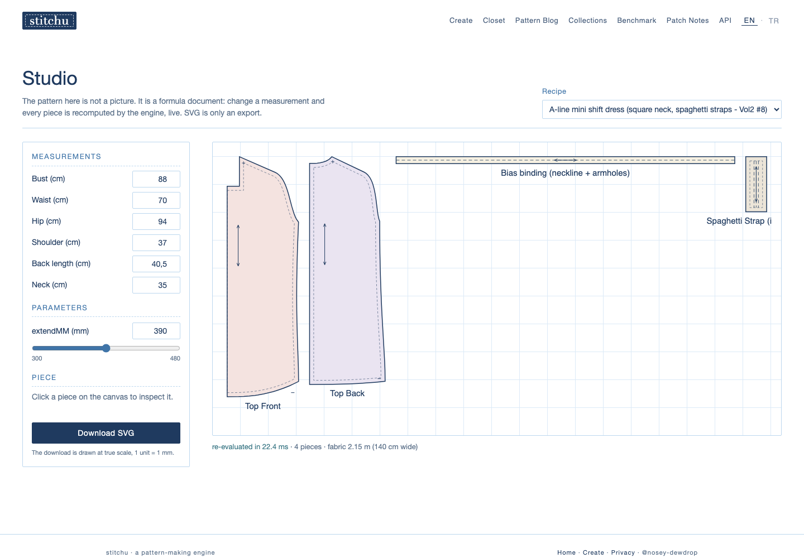
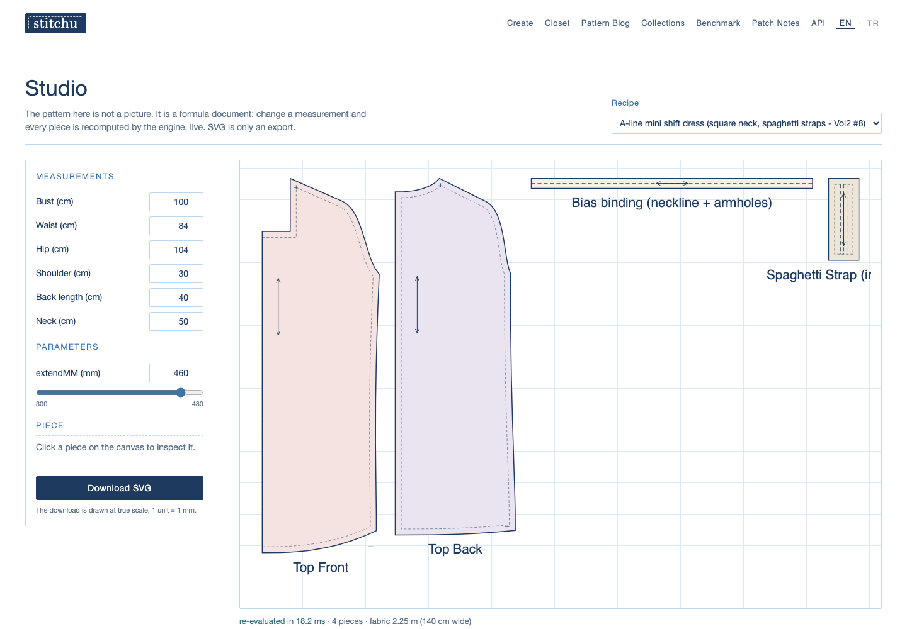

A-line mini shift dress, drafted to your measurements
Square neck, spaghetti straps, A-line mini shift. This is not a fixed-size PDF: the pattern is a formula document, and the engine recomputes every piece from the measurements you type, at true scale, one unit = one millimetre.
Price: to be set

What do you get?
- A print-ready PDF tiled to A4 sheets, with corner codes (A1 top left) and edge ticks so the sheets tape together edge to edge without guessing.
- A calibration block on the cover: a 3 cm square and a 1 inch bar, so the first thing you do is verify your printer kept scale at 100%.
- A numbered cutting list on the cover: every piece with its cut instruction and the exact sheets it prints on.
- 15 mm seam allowance included (source: engine/src/constants.gen.hpp kSeamAllowanceMM = 15): cut on the outer line, sew on the inner fine line, exactly as the cover states.
- Pattern pieces for this design: Top Front, Top Back, bias binding for neckline and armholes, and spaghetti straps.
- A fabric estimate computed for your body by the engine (for the default EU38 body it reads 2.15 m at 140 cm width; a larger body reads more, honestly).
- A true-scale SVG export of the same pattern, 1 unit = 1 mm, if you cut by plotter or projector.
Why made to measure?
A standard pattern is drafted once for a size chart, and your body is asked to fit it. Here the direction is reversed: the pattern is a recipe of formulas bound to a measurement table, and a deterministic C++ engine re-drafts every curve from your numbers. Change one measurement and the whole pattern is recomputed, not scaled, not stretched.
The two canvases below are the same recipe with two different bodies. The pieces are visibly different garments, because they are drafted, not graded.

How does the measure flow work?
- Open the studio and pick the shift dress recipe.
- Type your measurements in centimetres: bust, waist, hip, shoulder, back length, neck. Pick the dress length in millimetres (300 to 480 mm, mini to above-knee).
- Watch the canvas: every piece is recomputed live by the engine as you type. If an input cannot produce a sewable pattern, the engine refuses it and says so instead of drawing something wrong.
- Download the print-ready A4 PDF or the true-scale SVG. Print at 100% scale and verify the 3 cm calibration square before cutting.